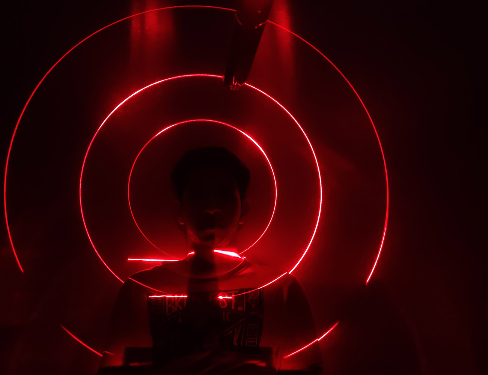

MIDI Reactive Lasers
Sound / Visual
This is a unique MIDI sequencer that was developed to explore organic, non-quantized rhythms. The sequencer is designed to have a visually engaging interface that makes it easy for any user to dive in and start creating fun sequences. The goal of this MIDI sequencer is to break free from the constraints of regular time intervals that dominate most Western music. Drawing inspiration from Afro-influenced styles like Gnawa and Samba(where the instrumentalists have the flexibility to add their own personal flair and swing to their rhythms), this sequencer creates intricate micro-rhythms that are not bound by quantization. Although most electronic rhythm generators rely on fixed timers, the challenge of recreating these unique micro-rhythms using digital tools and scripts required some out of the box thinking and experimentation. The visual interface was developed to be intuitive and to provide clear feedback, making it easy for the user to understand and play with.
Video
MIDI Reactive Lasers
Sound / Visual
Photographs / Video
Dennis Peter
This is a unique MIDI sequencer that was developed to explore organic, non-quantized rhythms. The sequencer is designed to have a visually engaging interface that makes it easy for any user to dive in and start creating fun sequences. The goal of this MIDI sequencer is to break free from the constraints of regular time intervals that dominate most Western music. Drawing inspiration from Afro-influenced styles like Gnawa and Samba(where the instrumentalists have the flexibility to add their own personal flair and swing to their rhythms), this sequencer creates intricate micro-rhythms that are not bound by quantization. Although most electronic rhythm generators rely on fixed timers, the challenge of recreating these unique micro-rhythms using digital tools and scripts required some out of the box thinking and experimentation. The visual interface was developed to be intuitive and to provide clear feedback, making it easy for the user to understand and play with.
The sequencer's functioning is based on a very simple concept, it relies on the convergence of two shapes. A small circle(play head) moves around in space, while larger circles are positioned around the same space. The program continuously checks for the small circle's intersections with the larger circles. When it identifies an intersection, the program transmits a "MIDI Note ON" message to the associated DAW. Similarly, when the play head leaves the boundaries of a larger circle, the program dispatches a "MIDI Note OFF" message for the same note. All eight large circles can be configured to trigger any note in the sequencer's interface. Using sine wave functions on both the X and Y axis, the play head movement is easily controlled. The amplitude, frequency, and phase of these functions allow for animation of the play head along more intricate curved paths. While a circular path creates a consistent, quantized rhythm with a fixed time interval between circle intersections, the play head's motion along more complex paths creates slight variations in these intervals. These subtle shifts between intersections result in the creation of captivating microrhythms.
MIDI data can be routed to any DAW/plugin/external synth in order to produce the sound. The interface for this sequencer allows for two parallel rhythms to be played at the same time - and both of these parallel rhythms can have their own timings and swing. This means you can add up to 16 individual notes to your sequence while also adjusting the position and radius of larger circles to create overlaps and empty spaces. The sequencer can send MIDI notes polyphonically - with the ability to have more than one note play at the same instant.
Currently, this sequencer is available as a touchdesigner script, making it difficult to share among users. It was developed as a proof-of-concept, and touchdesigner's fast prototyping environment allowed to create a powerful tool for creating and sending MIDI data without putting in as much of the resources required for software development. To make the sequencer more accessible, I plan to port the same idea into a p5.js script, making it available as a web app. With this new platform, users will be able to play with the sequencer and have MIDI signals sent to their DAW of choice. In addition, I would also consider creating a M4L device for use with Ableton if there is enough interest.
The sequencer's functioning is based on a very simple concept, it relies on the convergence of two shapes. A small circle(play head) moves around in space, while larger circles are positioned around the same space. The program continuously checks for the small circle's intersections with the larger circles. When it identifies an intersection, the program transmits a "MIDI Note ON" message to the associated DAW. Similarly, when the play head leaves the boundaries of a larger circle, the program dispatches a "MIDI Note OFF" message for the same note. All eight large circles can be configured to trigger any note in the sequencer's interface. Using sine wave functions on both the X and Y axis, the play head movement is easily controlled. The amplitude, frequency, and phase of these functions allow for animation of the play head along more intricate curved paths. While a circular path creates a consistent, quantized rhythm with a fixed time interval between circle intersections, the play head's motion along more complex paths creates slight variations in these intervals. These subtle shifts between intersections result in the creation of captivating microrhythms.
MIDI data can be routed to any DAW/plugin/external synth in order to produce the sound. The interface for this sequencer allows for two parallel rhythms to be played at the same time - and both of these parallel rhythms can have their own timings and swing. This means you can add up to 16 individual notes to your sequence while also adjusting the position and radius of larger circles to create overlaps and empty spaces. The sequencer can send MIDI notes polyphonically - with the ability to have more than one note play at the same instant.
Currently, this sequencer is available as a touchdesigner script, making it difficult to share among users. It was developed as a proof-of-concept, and touchdesigner's fast prototyping environment allowed to create a powerful tool for creating and sending MIDI data without putting in as much of the resources required for software development. To make the sequencer more accessible, I plan to port the same idea into a p5.js script, making it available as a web app. With this new platform, users will be able to play with the sequencer and have MIDI signals sent to their DAW of choice. In addition, I would also consider creating a M4L device for use with Ableton if there is enough interest.